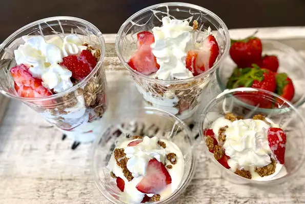

Fresas con crema

Descripción
¡Las fresas recién recolectadas o compradas en la tienda son una delicia increíblemente deliciosa para la primavera o el verano! . La cremosidad, junto con lo crujiente de la granola, agrega el sabor más suave con las fresas refrescantes.
Ingredientes
- 1 pinta de fresas frescas
- ¾ taza de leche condensada azucarada, cantidad dividida
- 4 onzas de crema espesa fría
- 2 tazas de granola, trozos grandes desmenuzados
- ½ taza de crema batida
Preparación
- Talle las fresas y córtelas a lo largo.
- Mezcle 1/2 lata de leche condensada y crema espesa con una batidora eléctrica hasta que espese.
- Sumerja un tenedor en la leche condensada restante y rocíelo en el interior de vasos o tazas para servir. Vierta un poco de la mezcla de crema espesa en cada taza, luego cubra con algunas fresas y granola. Repita el proceso de capas hasta que los vasos estén llenos, dejando un poco de granola sobrante.
- Cubra cada vaso con crema batida, luego rocíe más leche condensada encima y espolvoree con la granola restante. Servir inmediatamente.